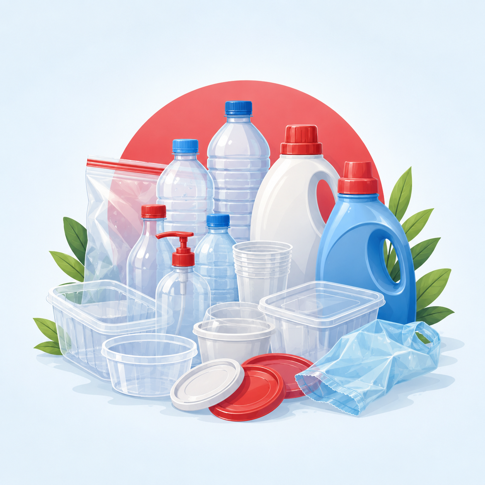
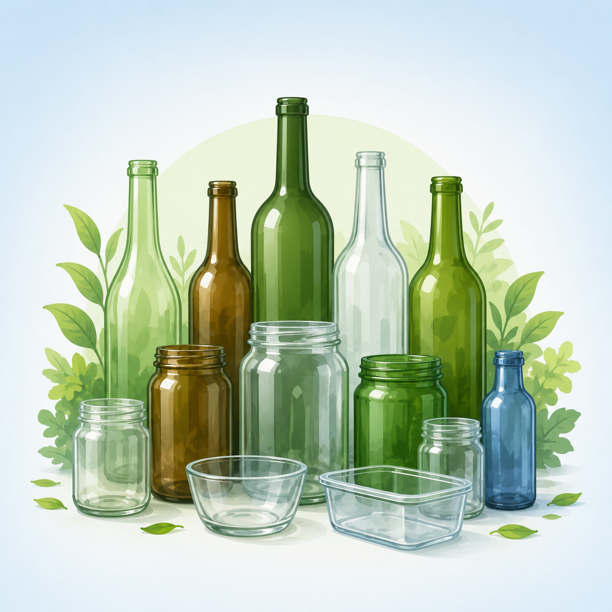
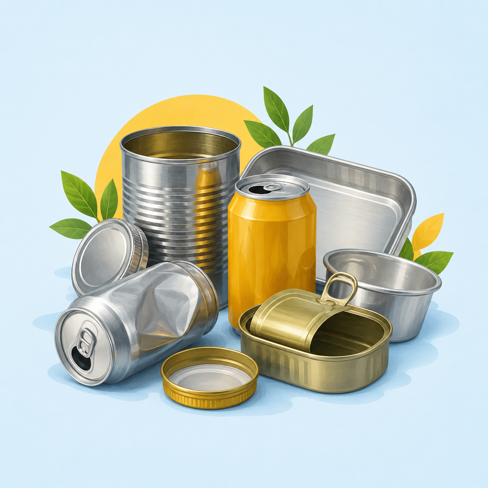

1
Separe em casa
Não misture materiais recicláveis com restos de comida, resíduos de banheiro ou lixo comum.
Separe os materiais recicláveis da sua residência. A coleta passa pelo bairro toda semana para recolher papel, plástico, vidro e metal.
Veja como participarOs moradores separam os materiais recicláveis e os disponibilizam no dia informado para o recolhimento.
Não misture materiais recicláveis com restos de comida, resíduos de banheiro ou lixo comum.
Esvazie as embalagens, retire restos de alimentos e mantenha os materiais secos.
Disponibilize os recicláveis no dia da coleta, separados do lixo comum.
Separe os principais materiais recicláveis utilizados no dia a dia.
Folhas, jornais, revistas, caixas e papelão limpo e seco.

Garrafas, potes, sacolas, tampas e embalagens plásticas.

Garrafas, frascos e potes de vidro sem resíduos em seu interior.

Latas, tampas e embalagens metálicas limpas.
Alguns cuidados simples facilitam o recolhimento e aumentam a possibilidade de reciclagem.
Separe seus materiais recicláveis e lembre-se: a coleta seletiva acontece toda quinta-feira. Sua participação ajuda a manter o bairro mais limpo e a destinar corretamente os resíduos.